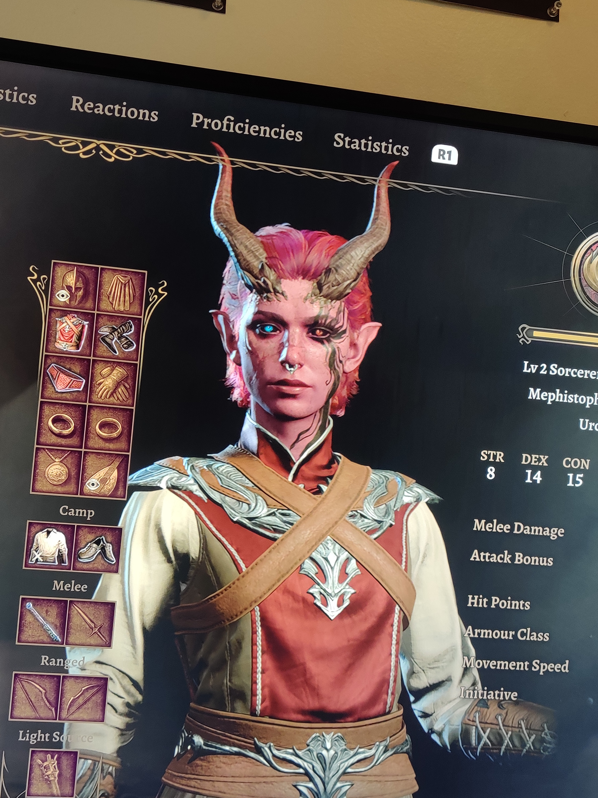

Baldur's Gate 3: The Basics
Overview:
Baldur's Gate 3 is a third-person role-playing video game based off of the tabletop game "Dungeons & Dragons." The plot revolves around your character waking up in a "mind flayer" ship after getting a parasitic tadpole placed in their brain. You are tasked with searching the lands for a cure to the tadpole as others with the same problem join your quest. As you move through the game, your choices alter the lives and fates of not only you, but everyone across the land. Players can customize their characters at the beginning of the game along with selecting their race and class.
My Character:
The character I have been playing as in my first Baldur's Gate 3 playthrough is a Tiefling Sorcerer named Ardeat (burn in latin). Overall, she is an empathetic person but can be sneaky and selfish when stealing. She is persuasive and deceptive when she needs to be. She specializes in fire and psychic spells, and she is giving in to the tadpole in her brain to receive special, "illithid" powers.
